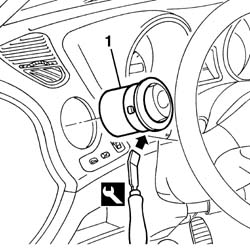

5010C38 l/h or r/h side air outlet (one) on fascia - r+r
- Path
- Procedures > 50 AUXILIARY UNITS > 5010 CLIMATE CONTROL - MISCELLANEOUS > 5010C air outlet and diffusers > 5010C38 l/h or r/h side air outlet (one) on fascia - r+r
- Kind
- repair procedure (removal / refitting; the operation number is the code)
- Applies to
- all engines; all production periods
- Interactive page
- https://sloeber94.github.io/elrnDB-a156/en/#/3238260
Applies to: all engines; all production periods
 Removing
Removing
 Refitting
Refitting1. Supplant and remove the hub with the proprer tool
 | Name | Country |
|---|---|---|
1 | Scraper blade | 1.823.014.000 |

Applies to: all engines; all production periods
Refitting
RemovingVerify that the hub has no damages
Install the hub in its seat
Verify the hub's functionality and the different regulation possibilities